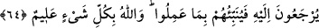

“Veya” kelimesi, belâ ile çok elemli azâbın beraberce gelmesini değil, ikisinin de
olmama ihtimâlini ortadan kaldırmak içindir. “ şeklinde fiilinin açıkça tekrarı ise
sakındırmaya verilen önemden dolayıdır. Her iki azâbın da emre aykırı davranmaya
dayandırılması da, buradaki emrin vücûb ifâde ettiğine delâlet etmektedir.
et-Te’vîlâtü’n-Necmiyye’de der ki: “O’nun” yâni şeyhlerinin “emrine aykırı
davrananlar, kendilerine” mal çokluğu, halkın kabulü, vakitsiz evlenme, şeyhin izni
olmadan sefere çıkma, hâdiselerin aksine cereyan etmesi, kadınların tersliği ve onlarla
imtihana tâbi tutulma, zenginlerle düşüp kalkma, hükümdarların kapılarında dolaşma,
makam ve mansıb isteme, âilesinin çokluğu gibi “bir fitnenin gelmesinden” -Çünkü
Allah’ın dışındaki şeylerle meşgul olmak fitnedir- “veya” Allah’tan kopup uzaklaşma
sebebiyle “kendilerine elem verici bir azâbın isâbet etmesinden sakınsınlar.”
Baklî Hakâik’da der ki: “Burada bahsedilen fitne, -Allahu a‘lem- zıtlarla, muhâlif ve
münkirlerle sohbet/beraberlik fitnesidir. Çünkü onlarla beraber olanlar Allah dostlarına
karşı kötü zan beslemeye başlarlar. Onlar Allah’ın ve Allah dostlarının
düşmanlarıdırlar. Her zaman hakka karşı direnirler ve kendilerine teveccüh etsinler
diye umum halk yanında Allah dostlarının hâllerini kötülerler. Bu ise fitnenin en
büyüğüdür.”
Ebû Said Harrâz (r.h.) der ki: “Fitne, bilmediği yerden yavaş yavaş helâke gittiği
halde kulun üzerine nimetlerin bol bol gelmesidir.” Ruveym de fitnenin avam için,
belânın ise havas için olduğunu söyler. Ebû Bekir b. Tâhir ise şöyle der: “Fitne
cezâlandırılmayı gerektirir. Belâ ise affedilir ve sevabı gerektirir.”
64. Bilmiş olun ki, göklerde ve yerde ne varsa Allah’ındır. O, sizin ne yolda
olduğunuzu iyi bilir. İnsanlar O’nun huzûruna döndürüldükleri gün yapmış
olduklarını onlara hemen bildirir. Allah, her şeyi hakkıyla bilendir.
“Bilmiş olun ki, göklerde ve yerde bulunan her şey” yaratmak, sâhip olmak, idâre
etmek, îcâd etmek, yok etmek, ilk olarak ve tekrar yaratmak bakımından bütün mevcûdât
“Allah’a âiddir.” Ey mükellefler, emre muvâfakat ve muhâlefet, ihlâs ve nifak gibi
durumlarda “O, sizin ne yolda olduğunuzu iyi bilir. İnsanlar O’nun huzûruna
döndürüldükleri gün yapmış olduklarını” kötü amellerini “onlara hemen bildirir.”
Yâni bütün halkın huzûrunda onlara amellerini gösterir ve dünyada ne kötü ameller
olduğunu onlara bildirir ve gerekli cezâyı verir.
Emre aykırı davranan münâfıkların cezâlarını görmek üzere kendine döndürüldükleri
günü de kesinlikle bilir. Bir şeyin olacağı vakti bilmek ise o şeyin vukûunu en güzel